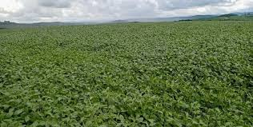
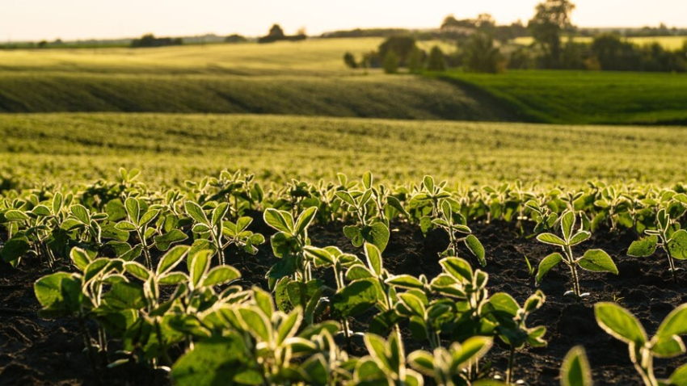
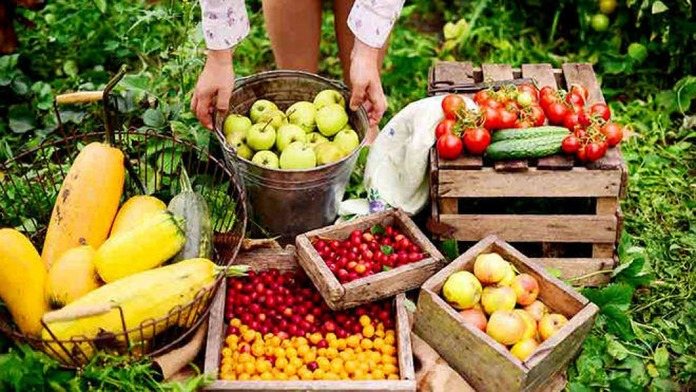

Bem-vindo à força do campo de Nova Tebas!
O agronegócio é a principal força econômica de Nova Tebas, município localizado na região Central do Paraná. O setor destaca-se pela forte presença da agricultura familiar, que compõe cerca de 85% das propriedades rurais locais, gerando renda direta, movimentando o comércio e promovendo o desenvolvimento sustentável.
Nossa terra é reconhecida pela riqueza de seu solo, pelo clima propício e, acima de tudo, pela dedicação do produtor rural. Com uma forte base na agricultura familiar, o município une tradição e inovação para alimentar famílias e impulsionar o desenvolvimento de toda a região.
Pilares da Nossa Produção
O ecossistema rural de Nova Tebas é diversificado e equilibrado, dividindo-se em importantes cadeias produtivas. Clique nas abas abaixo para explorar os detalhes:



O Valor da Agricultura Familiar
Cerca de 85% das propriedades rurais de Nova Tebas operam sob o regime familiar. Esse modelo não apenas fixa o homem no campo, mas também garante a segurança alimentar do município e fortalece cooperativas essenciais (como a Coopertebas). O incentivo à sucessão hereditária e ao cooperativismo faz com que as novas gerações continuem inovando no agronegócio local.
Inovação e Futuro no Campo
Nova Tebas investe constantemente em parcerias com órgãos de extensão rural (como o IDR-Paraná e o Sebrae) para levar capacitação técnica ao campo. O foco do município está em alinhar a alta produtividade com as exigências do mercado moderno: respeito ao meio ambiente, transição energética e manejo inteligente do solo.
Venha conhecer melhor Nova Tebas
Inscreva-se no nosso seminário on-line sobre o Agro sustentável em nosso município.